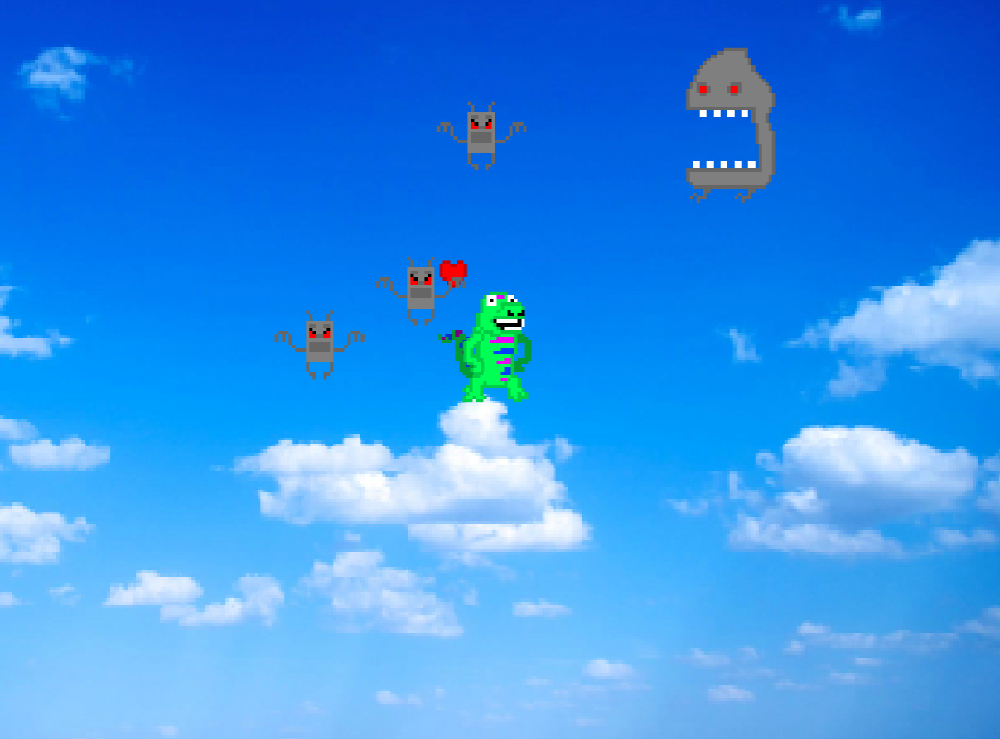

Game #1: Boomerang Warrior
This is the second to last game concept I tried to develop very seriously. I particularly focused in on the graphics and special effects, and the games overall polish. It's probably the most complete Scratch project I've ever made, even though it literally doesn't have an ending... Or a way to lose... Or to win...
In this game, you play as the green lizard in the center of the screen, and the aim of the game is to try and stop the robot army from reaching you using your trusty boomerang. You aim the boomerang by holding down the left-mouse button (which also shows the predicted flight path of the boomerang) and then release it to throw the boomerang and that chosen path.
While the boomerang is flying through the air, you can press the left mouse button again to make it fly at super speeds, giving you more control over the timing of it's flight path.
To open the game in a new tab, click the link below:
I planned on adding character movement and power ups, but I retired the project to focus on learning real development engines when I realized I couldn't export a .exe file (still waiting on the independent project of that one...).